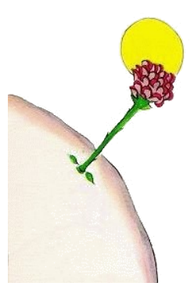

7
In li quinesim die it esset denov li agne, quel auxiliar revelar un secrete del litt prince. Il questionat me subitmen, sin digressiones, quam il coliet li fructe de un in long silentie maturat problema:
"Si li agne manja arbustes, esque it tande anc manja flores?"
"Un agne manja omnicos quel veni avan su bocca."
"Anc si li flores have spines?"
"Yes. Anc li flores queles have spines."
"Pro quo ili have tande spines?"
Yo ne savet it. Yo esset just ocupat con li prova descruvar un tro fortmen firmat bolt de mi motor. Yo esset tre suciat pro que nu it semblat a me que mi panne esset tre grav e yo preparat me al max mal pro que mi provision de aqua por trincar esset presc exhaustet.
"Quel scope have li spines?"
Li litt prince nequande renunciat de un question si il unvez hat posit it. Yo esset ocupat de mi bolt e respondet sin reflecter mult:
"Li spines ne have alcun scope, li flores lassa crescer it solmen ex malicie."
"O ve!"
Il tacet. Ma tande il fat un objection contra me in un modo de desaprobation.
"Yo ne crede te to! Li flores es debil. Ili es sin malicie. Ili protecte se qualmen ili posse. Ili imagina se que ili es per li auxilie de spines dangerosi ..."
Yo respondet nequó e yo dit a me self in li sam moment: Si ti bolt refusa se ancor longmen, yo va dever demover it per un batte con li martell.
Li litt prince trublat mi considerationes denov.
"E tu vermen crede, que li flores ..."
"Ma no! Ma no! Yo crede nequó. Yo ha dit quocunc sin reflection. Qualmen tu vide, yo es ocupat pri plu important aferes."
Il regardat perplexmen a me.
"Pri plu important aferes!"
Il regardat a me qualmen yo inclinat me con un martell in li manu e del oleo sordidat manus súper un cose, quel vell har devet semblar a il tre hideosi.
"Tu parla quam li grand homes!"

To tre ahontat me. Ma il adjuntet sin misericordie:
"Tu confuse omnicos, tu desordina omnicos!"
It esset vermen tre furiosi. Il sucusset su aurin capilles in li vente.
"Yo conosse un planete sur quel un scarlat senior logia. Il ha nequande halat li odore de un flor. Il ha nequande regardat un stelle. Il ja nequande amorat alquí. Il ha fat nequande alquó altri quam additiones. E li tot die il repeti tam quam tu: Yo es un seriosi mann! E to fa le tre inflat de orgollie. Ma to ne es un hom, ma un spongie.
"Un quo?"
"Un spongie!"
Nu li litt prince esset es tre pallid de colere.
"It es nu milliones de annus que li flores crea spines. It es miliones de annus que malgré to li agnes manja li flores. E tu pensa que it es ínimportant si on vole saver pro quo ili efortia se tant mult producter spines queles es util por nequó? Ti combatte del agnes con li flores deve esser ínimportant? Min seriosi quam li additiones del corpulent rubi mann? E si yo conosse un flor, quel existe solmen unvez in li tot munde, necú altri quam sur mi litt planete, e se un litt agne, sin saver quo it fa, posse extinter ti flor in un matine per un unic morsion. To ne deve esser important?!"
Il devenit rubi pro excitation e continuat:
"Si un person ama un flor, quel existe solmen un unic vez sur omni milliones e milliones de stelles, tande it sufice a il completmen, que il regarda ad supra a ili por esser felici. Il di a se self: Mi flor es ta ad supra, alcú ... Ma si li agne manja li flor, talmen it es por il tam quam subitmen vell esser extintet omni stelles! E to ne deve esser important?"
Il ne posset continuar parlar. Il subitmen comensat singlutar fortmen. Li nocte hat comensat. Yo hat escartat mi utensiles. Mi martell, mi bolt, li sete e li morte, omnicos esset egal por me. It esset necessi sur un stelle, un planete, sur li mie ci sur li terra consolar un litt prince! Yo inbrassat le. Yo lullat le. Yo chuchotat a il: "Li flor, quel tu ama, ne es in dangere ... Yo va dessinar un museliere a tui agne ... Yo va dessinar un palissade por tui flor ... Yo... "
Yo ne savet quo yo devet dir plu. It semblat a me que yo es tre ínhabil. Yo ne savet qualmen yo posset pervenir a il, u yo posset atinger le ...
It es tant misteriosi, li land del lácrimes.